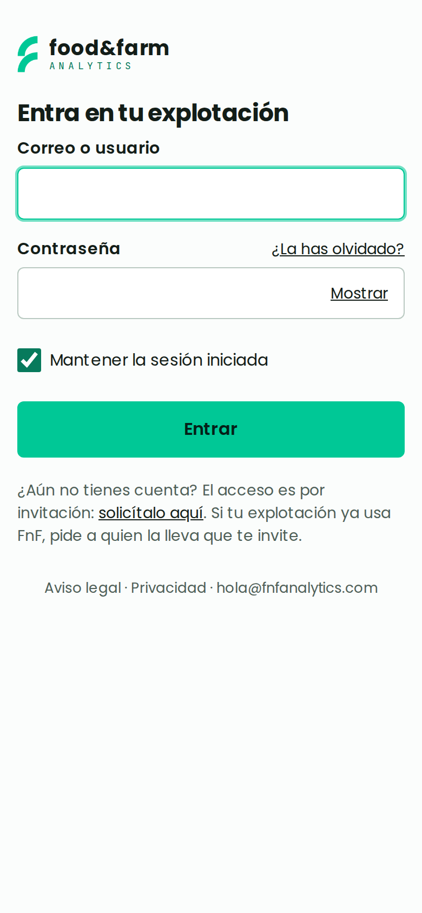

Dar de alta tu explotación
Cómo entra tu explotación en FnF Analytics y cómo creas tu cuenta de titular. El alta no es pública: se entra por invitación, con un enlace personal que te llega por correo y vale 7 días. En diez minutos tienes la cuenta creada y ya dentro de tu explotación.
Antes de empezar
- El nombre con el que llamas a la explotación y el correo del titular: son lo único que se necesita para arrancar.
- Si tu explotación ya usa FnF, esta guía no es la tuya: quien la lleva tiene que invitarte (Invitar a tu asesor o a un trabajador).
Pasos
- Pide el acceso — en la pantalla de entrada («Entra en tu explotación») pulsa «solicítalo aquí», el enlace que va con «¿Aún no tienes cuenta? El acceso es por invitación». También puedes escribir a hola@fnfanalytics.com.

- Espera el correo — el equipo de FnF crea tu explotación y te manda un correo con asunto «Te invitan a [tu explotación] en FnF Analytics». Dentro va el enlace de la invitación y avisa: «El enlace vale 7 días».
- Abre el enlace — verás «Únete a [tu explotación]», con tu correo ya puesto y bloqueado: con ese correo entrarás siempre y recuperarás la contraseña. Solo rellenas dos campos:
- «Tu nombre y apellidos».
-
«Crea una contraseña»: al menos 8 caracteres, que no sea solo números, ni una palabra común, ni tu nombre, tus apellidos o tu correo.
-
Marca «Acepto el aviso legal y la política de privacidad» y pulsa «Crear la cuenta y entrar». Entras directamente, sin volver a escribir la contraseña, y en Inicio verás «Bienvenido a FnF Analytics. Ya estás en [tu explotación]».
- Mira lo que le falta al cuaderno — abre «Campo → Cuaderno de explotación». El cuaderno se imprime con lo que ya hay y marcando cada casilla que falta: los huecos señalados son la lista de lo que queda por dar. Lo que la app no te pide a ti (Nº de registro, datos del asesor de la ficha 5…) se completa con el equipo de FnF: pásaselos por correo.
- Sigue con las parcelas — importa tus recintos desde SIGPAC (Importar parcelas desde SIGPAC) y da de alta a la gente con carné en «Equipo → Trabajadores»: el cuaderno pide nombre, NIF y categoría de cada aplicador.
Si algo va mal
- «Esta invitación ha caducado» o «Este enlace no es válido» → las invitaciones valen 7 días. Pide que te manden otra o escribe a hola@fnfanalytics.com.
- «Esta invitación ya se usó» → ya tienes cuenta: entra con tu correo y tu contraseña. Si no la recuerdas, en la pantalla de entrada está «¿La has olvidado?».
- «El correo (o usuario) y la contraseña no coinciden. Revisa las mayúsculas.» → revisa mayúsculas o recupera la contraseña; el enlace «Recuperar la contraseña» va en el propio aviso.
- «La contraseña se parece demasiado a tu nombre, tus apellidos o tu correo. Prueba con otra distinta.» → cámbiala; también se rechazan las de menos de 8 caracteres, las solo números y las palabras comunes.
- «Para crear la cuenta hay que aceptarlos.» → falta marcar la casilla del aviso legal y la privacidad.
- Ya tenías cuenta con ese correo (por ejemplo, te invitan a una segunda explotación) → verás «Ya tienes una cuenta con [tu correo]. Entra con ella y te añadimos a [la explotación]». Pulsa «Entrar y unirme».
- Entras y ves «Tu cuenta aún no está en ninguna explotación» → nadie ha unido tu cuenta a una explotación todavía. La propia pantalla te deja escribir a hola@fnfanalytics.com; si tienes una invitación pendiente, ahí aparece el botón «Unirme a [la explotación]».